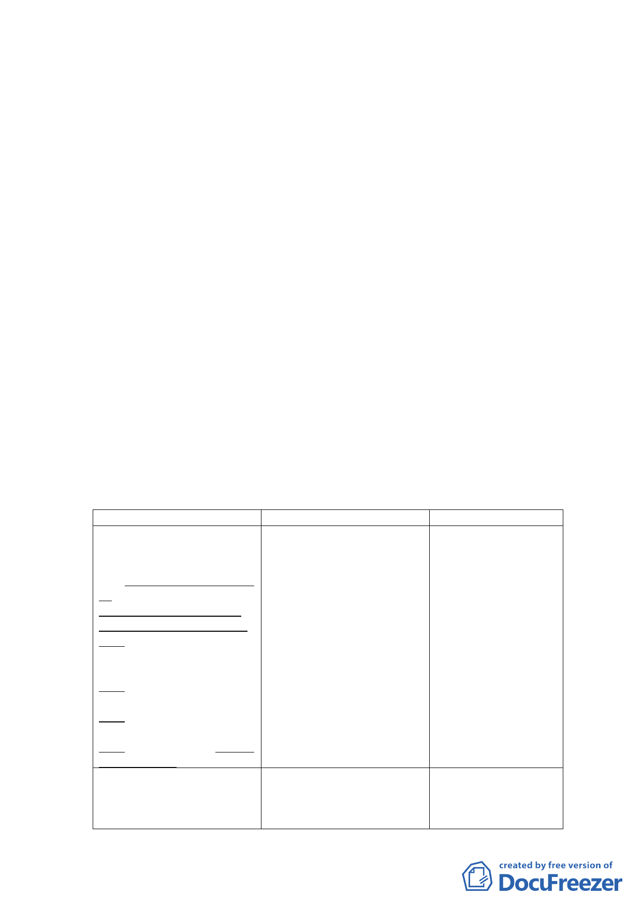

本案原址為58、59年間設立之廣慈博愛院及福德平宅，
提供老人及低收入戶之照護與臨時住宅，復因廣慈博愛院與
福德平宅建物老舊，為活化市有土地，並釋出開放空間及公
共資源與社區共享，引進部分商業活動以挹注社會福利事
業，於95年間辦理都市計畫變更。
惟因後續委託開發未臻順利，故重新檢討後續開發利用
事宜，並配合市府公營住宅政策，進行綜合規劃利用。又因
當時都市計畫考量該處僅作為社會福利設施使用，且周邊公
共設施服務水準不佳，爰比照鄰近第三種住宅區之容積率降
低開發強度進行總量管制。現因配合市府公營住宅政策，經
評估周邊道路服務水準、停車需求等可負荷之前提下，擬參
酌原機關用地開發強度進行整體規劃。
相關社會福利設施及公營住宅之興建，經市府認定符合
都市計畫法第27條第1項第4款規定，故辦理本次都市計畫修
訂案。
三、 修訂主要計畫內容：
新計畫
肆、計畫目標與規劃構想
一、計畫目標
(一)社會福利設施更新與轉
型，建構完整之照顧服務系
統。
(二)配合推動公營住宅政
策，健全住宅租賃市場。
(三)朝大眾運輸導向規劃，
並配合捷運信義線東延段設
站，順暢交通動線系統。
(四)促進土地有效利用，帶
動地區整體發展。
(五)配置地區性公共設施，
提升地區生活環境品質。
(六)引進商業設施，提供鄰
里性商務需求。
二、規劃構想
(一)社會福利設施用地－提
供銀髮族、身心障礙
者、一般社會大眾所需
原計畫
說明
肆、計畫目標與規劃構想 1.配合社會福利設施
一、計畫目標
之規劃，修正相關文
(一)社會福利設施更新與轉 字。
型，建構銀髮園區。
2.考量公有土地有效
(二)朝大眾運輸導向規劃， 利用，並落實推動公
並配合捷運信義線東延段設 營住宅政策，新增本
站，順暢交通動線系統。
案計畫目標內容。
(三)促進土地有效利用，帶 3.因商業區、社會福利
動地區整體發展。
設施用地係修正採
(四)配置地區性公共設施， 分別開發，故修正相
提升地區生活環境品質。
關文字。
(五)引進商業設施，促使社 4.修正條次。
會福利事業自償經營。
二、規劃構想
1.為保留後續規劃彈
(一)社會福利設施用地－提 性，修正社會福利設
供銀髮族、身心障礙者 施規劃構想文字。
及一般社會大眾所需 2.配合公營住宅推動
- 10 -